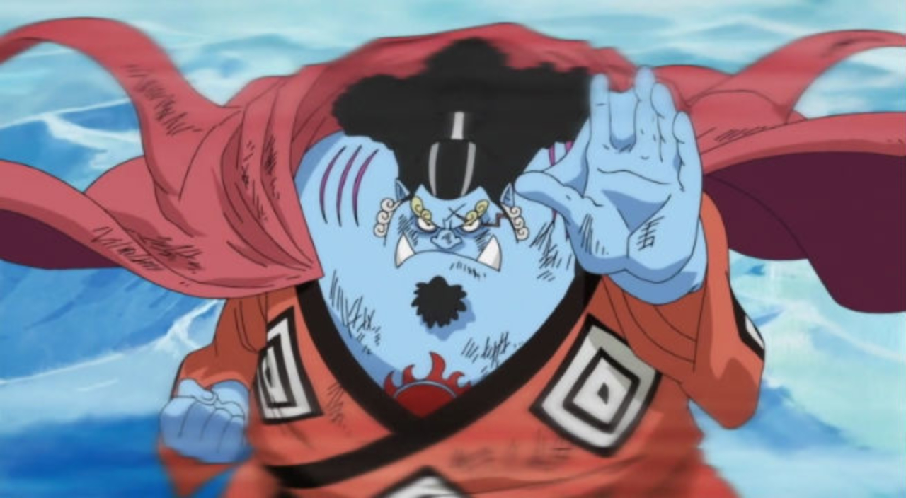

| Monkey D.luffy |
|
Monkey D. Luffy, surnommé d'une manière récurrente Luffy au chapeau de paille
Il est intronisé en tant que garçon possédant une puissance élastique, une faculté qu'il a développée après avoir mangé un fruit du démon.
Il est le fondateur et le capitaine de l'Équipage de Chapeau de paille. Son rêve de toujours est de devenir le roi des pirates en trouvant le trésor légendaire
|
| roronoa zoro |
|
Roronoa Zorro est un personnage de fiction appartenant à la franchise médiatique japonaise One Piece créée par Eiichiro Oda. C'est un épéiste de grand renom qui se bat avec trois sabres, faisant partie de l'Équipage de Chapeau de paille dirigé par Monkey .Luffy |
| vinsmoke sanji |
|
Sanji Vinsmoke, plus connu sous le nom de Sanji la Jambe Noire, est un personnage de fiction de la franchise médiatique One Piece créée par Eiichirō Oda. Membre de l'équipage de Monkey D. Luffy, il occupe la place de cuisinier en son sein. Il a pour particularité de ne se battre qu'avec ses jambes et d'être un véritable gentlemen envers la gent féminine. |
| Trafalgar D. Water Law |
|
Surnommé « Le Chirurgien de la Mort », Trafalgar D. Water Law, ou Trafalgar Law, possède une prime sur sa tête de 500 millions de berrys. Il est originaire de North Blue, et il est capitaine et chirurgien de bord de l'équipage du Heart. Il est également un maudit des flots et possède les pouvoirs du « Fruit du Bistouri »: d'où son surnom, qui lui permet dans une zone délimitée de découper les êtres vivants tout en les gardant en vie, |
| Portgas D. Ace |
 |
Portgas D. Ace (né Gol D. Ace), connu sous "Ace aux Poings Ardents" est le frère spirituel de Monkey D. Luffy et de Sabo. Il est le seul fils du défunt Roi des Pirates Gol D. Roger et de son épouse Portgas D. Rouge. |
| Jinbe |
 |
Jinbe "Le Paladin des Mers" est le timonier de l'Équipage du Chapeau de Paille. Il est officiellement le dixième membre de l'équipage du Chapeau de Paille et le neuvième à rejoindre l'équipage de Luffy. |
| Tony-Tony Chopper |
|
Tony-Tony Chopper est un personnage de fiction appartenant à la franchise médiatique japonaise One Piece créée par Eiichirō Oda. Chopper est un renne qui a mangé le « Fruit de l'Humain » (Hito Hito no mi) qui le transforme en hybride moitié renne et moitié humain. Il est le médecin de l'équipage de Luffy. |
| Nami |
|
Nami est une personnage de fiction appartenant à la franchise médiatique japonaise One Piece créée par Eiichiro Oda. Elle fait partie de l'équipage de Luffy dans lequel elle tient le rôle de navigatrice et de cartographe |
| Sabo |
|
Sabo est le deuxième membre le plus important de l'Armée Révolutionnaire derrière Monkey D. Dragon, il est le frère spirituel de Monkey D. Luffy et Portgas D. Ace. |
| Boa Hancock |
 |
L'Impératrice Pirate Boa Hancock est la Princesse Serpent d'Amazon Lily qui gouverne la tribu Kuja avec l'aide de ses deux sœurs gorgones, Boa Marigold et Boa Sandersonia. Boa Hancock est le seul membre féminin des 7 Capitaines Corsaires. |
| Shanks |
|
Shanks dit Le Roux, est le capitaine de l'Équipage du Roux et l'un des Quatre Empereurs. Il est également un ancien membre du légendaire équipage des Pirates Roger, le seul groupe à avoir conquis avec succès Grand Line. |
| Nico Robin |
|
Nico Robin est une archéologue qui apparaît pour la première fois dans la série sous les traits du bras droit de Crocodile, l'un des puissants grands corsaires. Elle est l'antagoniste secondaire de la saga Alabasta.Elle fait maintenant partie de l'équipage de Luffy |
| Cavendish |
|
Cavendish, aussi appelé "Le Pirate Noble", est le prince du Royaume Bourgeois, un Super Rookie ainsi que le capitaine de L'Équipage des Magnifiques Pirates et le Commandant de la 1ère flotte de La Grande Flotte du Chapeau de Paille. |
| Vinsmoke Reiju |
|
Vinsmoke Reiju, "Poison Pink" est l'unique fille de la Famille Vinsmoke. Cela fait d'elle la princesse du Royaume de Germa et une commandante du Germa 66. Elle est la grande sœur d'Ichiji, de Niji, de Sanji et de Yonji.C'est une humaine génétiquement modifiée par son père. |
| Usopp |
 |
Usopp, connu anciennement sous le nom Pipo dans la première version française du manga, également surnommé « Sniperking, le roi des snipers », est un personnage de fiction appartenant à la franchise médiatique japonaise One Piece créée par Eiichirō Oda. Membre de l'équipage de Monkey D. Luffy, il occupe le poste de canonnier |
| Don Quichotte Rossinante |
|
Don Quichotte Rossinante, plus connu sous le pseudonyme de Corazon, était un officier d'élite de la Famille Don Quichotte et le petit frère biologique de Don Quichotte Doflamingo. De ce fait, Corazon était lui aussi un membre de la Noblesse Mondiale avant de devenir pirate. Il était aussi Commandant de la Marine en mission d'infiltration dans l'équipage de son propre frère. |
| Don Quichotte Doflamingo |
|
Don Quichotte Doflamingo était l'un des 7 Grands Corsaires, roi de Dressrosa, frère biologique de Don Quichotte Rossinante, capitaine de L'Équipage de Don Quichotte Doflamingo ainsi qu'un "ancien" membre des Dragons Célestes. Il avait, avant de rejoindre les rangs des Grands Corsaires, |
| Crocodile |
|
Crocodile, plus connu sous le titre de Sir Crocodile ou de Mr. 0, fût le président de Baroque Works et l'antagoniste principal de la Saga Baroque Works. Son nom de code dans l'organisation était Mr. 0 |
| Brook |
|
Brook est un personnage du manga One Piece. Il s’agit d'un homme qui, ayant mangé le Fruit de la Résurrection , a pris l’apparence d’un squelette. Luffy le prend dans son équipage afin d'avoir un musicien à bord (chose qu’il désirait depuis le début de son aventure) et parce qu'il est très attaché à son apparence squelettique. |
| Franky |
|
Franky est un personnage assez connu de Water Seven. Son activité consiste à détrousser les pirates puis à vendre leur navire aux charpentiers de Water Seven. Il est, avec Icebarg, l'un des meilleurs charpentiers navals du monde. Plus tard, il deviendra le charpentier de l'Équipage du chapeau de paille. |